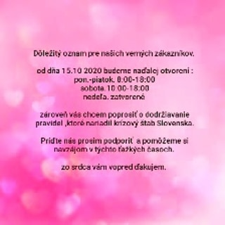

Vážení zákazníci, odo dňa 15.10 2020 budeme naďalej otvorení:
Pon.-piat:8:00-18:00
Sobota:10:00-18:00
Nedeľa:zatvorené
Zároveň vás chcem poprosiť o dodržiavanie pravidiel, ktoré nariadil krízový štáb Slovenska.
Celú našu ponuku koláčikov, tôrt,raňajkové menu a sladkých múčnikov vám vieme zabaliť so sebou .
Taktiež kávičku, čajík ,alebo horúcu čokoládu vám s radosťou pripravíme.
Každé ráno zverejníme našu aktuálnu ponuku ,aby ste si vedeli vybrať, poprípade objednať na tel.čísle:0944 278 500 .
Objednávky prijímame od 8:00-16:00
A od 16:00-18:00 vám to vieme priniesť až domov.
Rozvoz je len v rámci petržalky a platí sa len v hotovosti.
Podporte svoju cukráreň Deborah v týchto ťažkých časoch.
Vopred vám zo srdca ďakujem.
#bratislava #petrzalka #cerstve #domace #homemade #podporte #objednavky #azdomov #zdravie #zdraverecepty #zdravejedlo #dnesjem #dnes #dnesjem #torty #kolace #ranajky #mucniky #cake #cakes #sweet #sladkosti #sosebou #kam#kamdomesta #chleba #pečivo #kava #caj #horucacokolada